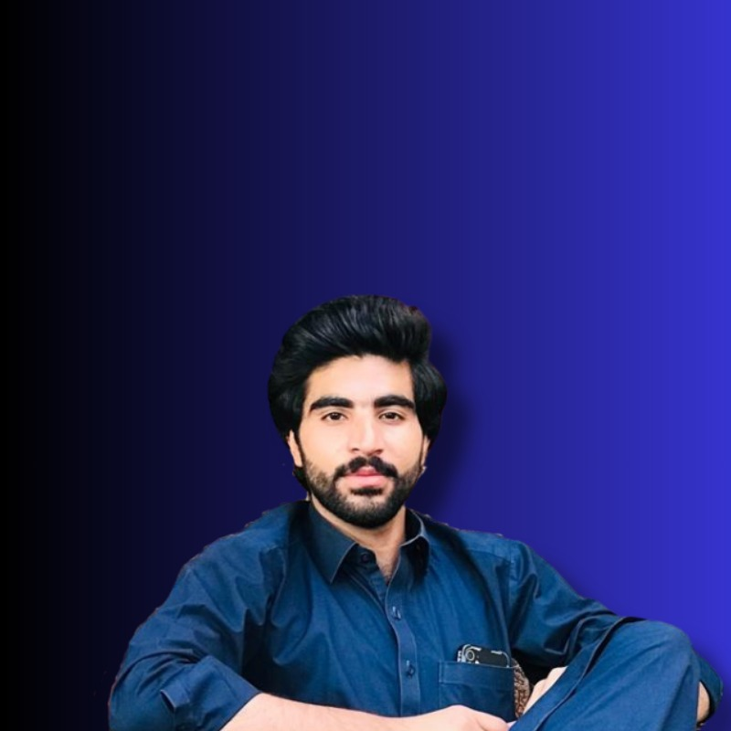
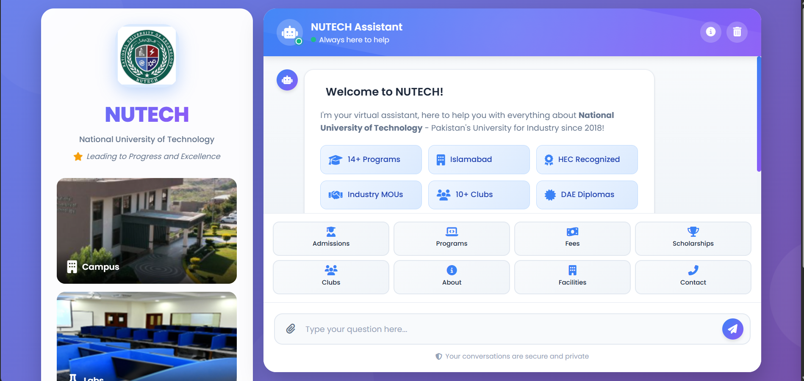
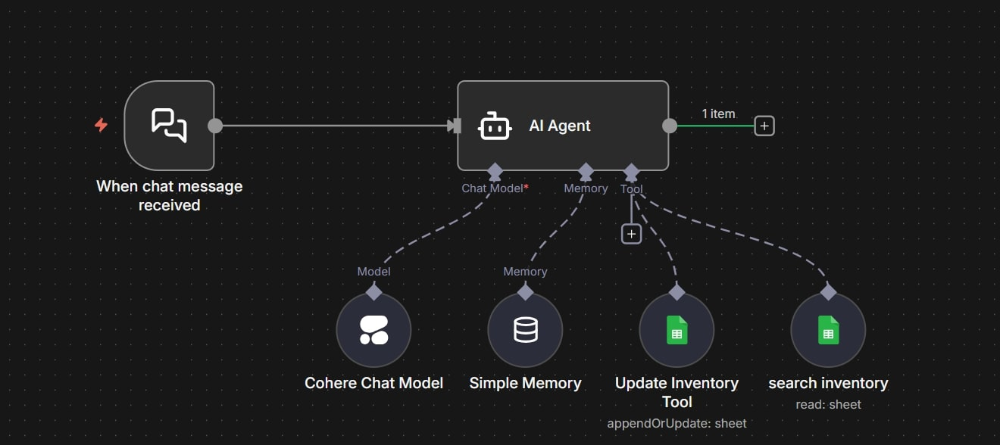
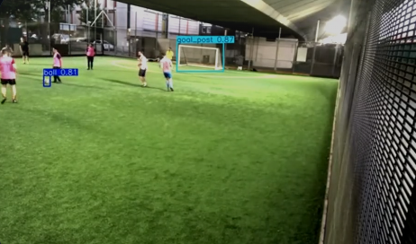

Machine Learning
Building and training models in Python, mostly for computer vision with YOLOv8, OpenCV, and PyTorch.
AI & Machine Learning Developer
I'm an Artificial Intelligence student at NUTECH, focused on machine learning, computer vision, and automation. I build real-world projects, from object detection models to automation workflows and web applications.

The main things I work with.
Building and training models in Python, mostly for computer vision with YOLOv8, OpenCV, and PyTorch.
Building automation workflows with n8n and REST APIs to handle repetitive manual tasks.
Building responsive websites with HTML, CSS, and WordPress, and picking up React / Next.js.
A few things I've built.
I ran the detection model across full match footage to make an annotated video that marks the ball and the goalpost through every frame.
Use cases
A computer-vision system for an autonomous smart fridge. Cameras inside the unit detect every product a customer takes and build a live, itemized bill in real time, with no scanning or cashier needed.
Key features
An AI agent that turns a plain-language request or an uploaded document into a finished result. It understands the task, plans the steps, picks the right tools, and runs them to reach an answer.
Key features

A chatbot that answers common questions about NUTECH, like admissions, programs, facilities, and student life.

An automation built in n8n that handles inventory tasks by wiring a few APIs together, with no full backend needed.

A custom YOLOv8 model that detects the ball and the goalpost in football frames, drawing bounding boxes with confidence scores.
Key features
About me
I'm an Artificial Intelligence student at the National University of Technology (NUTECH), studying since 2023. My focus is on building real projects across machine learning, computer vision, and automation, not just the theory behind them.
So far that has included object detection with YOLOv8, automation workflows in n8n, and full-stack web development. I enjoy taking an idea from a rough concept through to something that actually runs, and I'm always learning more about how modern AI systems are built.
National University of Technology (NUTECH), Pakistan · 2023 – Present
Object detection, model training, and AI automation.
Get in touch
Email is the best way to reach me, and I'm open to job opportunities and freelance work.
inbox.haseebrehman@gmail.com